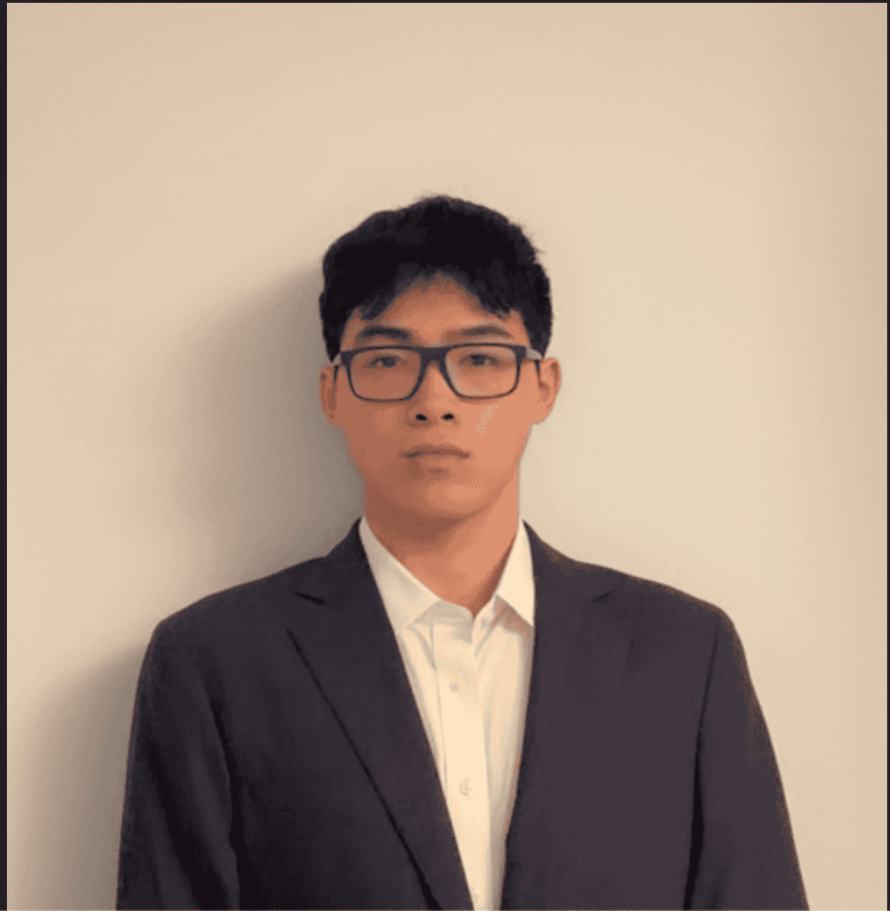

About Me

Hi, I'm Colin. I'm a second year Data Science and Mathematics major at Northeastern University, set to graduate in May 2028. I grew up in Queens New York and recently moved out to Long Island. For fun I like to play tennis, listen to music, play video games, watch anime, and code/study for some projects. My professional interests sit at the intersection of data science, mathematics, and quantitative finance, and I am always looking for new ways to apply any type of analytical thinking to real world problems.
At Northeastern, I have built a strong foundation in statistics, machine learning, and anything related to data like cleaning or analysis. I enjoy creating projects and researching topics that blend technical depth with practical impact. I love learning about any type of mathematical concepts, machine learning, and finance/market concepts as well.
Outside of academics and work, as mentioned before I stay active by playing on the Northeastern Club tennis team and also playing basketball at the university's recreation center. I also like to watch anime and play video games so if you have any recommendations feel free to reach out! On the professional side, I will be joining Brean Capital this summer as a Software Engineering Intern on their Fixed Income Software and Analytics team. I also hope to get a Co-op after that internship is finished. I am excited to continue building on my technical skills and exploring new opportunities in quantitative finance and data science/any data related field.
Contact
Feel free to get in touch through any of the channels below.